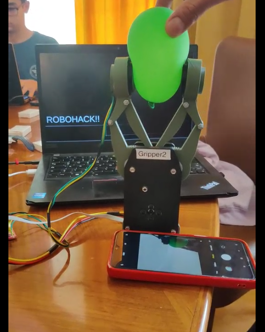

Smart Gripper with Object Detection
Intelligent robotic gripper system with computer vision for adaptive object manipulation
Project Overview
This project demonstrates a smart robotic gripper that can pick up all kinds of objects—from delicate balloons to heavy metal rods—without needing to be reconfigured. By combining vision, adaptive control, and a user-friendly interface, the gripper can sense, classify, and handle objects safely and efficiently. It’s a great example of how robotics can adapt to real-world challenges with intelligence and flexibility.
Features & Components
- Automatically adjusts grip for different objects
- Uses computer vision to recognize and classify items
- Torque-controlled for safe and stable handling
- Manual and automatic operation modes
- Easy-to-use interface with live feedback
- Handles both soft and hard objects with precision
See It in Action
Technologies Used
Project Impact
This smart gripper shows how robotics can be both gentle and strong, adapting to whatever task is needed. It’s a step toward more flexible, intelligent machines that can work safely alongside people and handle a wide variety of real-world objects.
GitHub Repository
Explore the complete implementation, documentation, and codebase on GitHub:
View on GitHub